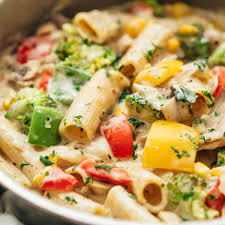

WHITE SAUCE PASTA RECIPE

Description:
White sauce pasta is a creamy and indulgent dish that is loved by pasta enthusiasts worldwide. This comforting recipe features al dente pasta coated in a velvety white sauce made from butter, flour, and milk. The addition of garlic and grated cheese lends depth of flavor to this classic Italian-inspired dish, making it a delightful choice for a cozy dinner or special occasion.
Ingredients:
- Pasta: Fusilli, Penne, or any pasta of your choice
- For White Sauce:
- Butter
- All-purpose flour
- Milk
- Garlic cloves, minced
- Grated cheese (Parmesan or Cheddar)
- Salt and black pepper to taste
- Additional Ingredients:
- Extra virgin olive oil
- Fresh parsley, chopped (for garnish)
- Red chili flakes (optional)
- Vegetables (such as broccoli, mushrooms, bell peppers) - optional
Steps:
- Cook the Pasta: Bring a large pot of salted water to a boil. Cook the pasta according to package instructions until al dente. Drain and set aside.
- Prepare the White Sauce: In a saucepan, melt butter over medium heat. Add minced garlic and sauté until fragrant. Gradually whisk in the flour until a smooth paste forms (roux). Cook for 1-2 minutes, stirring constantly.
- Make the Sauce: Slowly pour in the milk, whisking continuously to prevent lumps. Cook the sauce until it thickens and coats the back of a spoon. Add grated cheese and stir until melted and smooth. Season with salt and black pepper to taste.
- Sauté Vegetables (optional): In a separate pan, heat olive oil over medium heat. Add vegetables of your choice and sauté until tender.
- Combine Pasta and Sauce: Add the cooked pasta to the white sauce. Toss until the pasta is evenly coated with the sauce. If using sautéed vegetables, add them to the pasta as well.
- Serve: Transfer the white sauce pasta to serving plates. Garnish with chopped parsley and red chili flakes, if desired. Serve hot and enjoy!